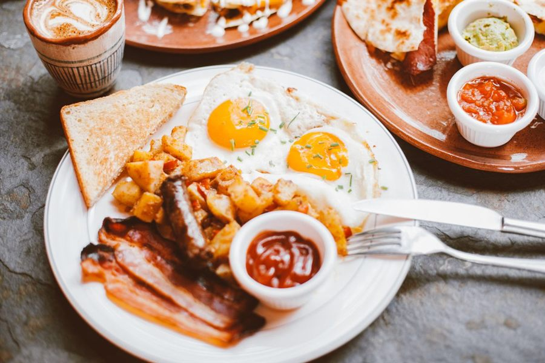

Breakfast in Southwest Houston does not have to stop at eggs and toast. If you want a plate with Louisiana flavor, Bayou Fork Kitchen serves breakfast on Fondren Road starting at 6 a.m. every day. Here is how to choose between our most popular morning plates, whether you want something savory, sweet or built for a serious appetite.
Choose shrimp and grits for a savory Creole breakfast
Shrimp & Grits is the best starting point if you want a real taste of Creole cooking in the morning. Creamy grits carry the sauce, while seasoned shrimp bring the dish together. It is warm, rich and satisfying without needing a long list of sides. If you have searched for shrimp and grits near Missouri City or Southwest Houston, this is the plate to put first on your list.
Choose chicken and waffles when you want sweet and savory
Chicken and waffles works because every bite gives you a contrast: crisp fried chicken, a tender waffle and sweetness on top. It is a strong brunch-style choice for anyone who wants more than a standard breakfast plate. Add a side or share a plate if your group wants to try more than one dish.


Choose a breakfast plate when you need a familiar favorite
Sometimes the right answer is a straightforward breakfast plate. It is easy to customize, familiar to everyone at the table and useful when part of the group wants Cajun flavor while someone else wants a classic morning meal. Check the breakfast section of our full menu before you order so you can compare the available combinations.
Breakfast for a group: make ordering easier
Collect the order before anyone leaves the office or house. Note each person’s main dish, sides and any allergies, then submit everything together. For larger breakfast meetings or family gatherings, include your headcount, serving time and location in a catering request. Larger orders generally need at least one day’s notice, so early planning gives the kitchen more room to prepare.
Pickup, drive-thru or delivery
Bayou Fork Kitchen is located at 10600 Fondren Road in Southwest Houston. The drive-thru is open during service hours, so you can pick up breakfast without turning the morning into a long stop. You can also send an order online for pickup or delivery. The kitchen confirms your order and total before anything is charged.
Make the breakfast run simple
Before you leave, check the route and current travel time. Use Google Maps for directions to Bayou Fork Kitchen. We serve breakfast and lunch from 6 a.m. to 4 p.m. every day, then reopen for dinner from 5 p.m. to 10 p.m.
What should you order first?
If it is your first visit, start with Shrimp & Grits for a distinctly Creole breakfast. Bring someone with you, add chicken and waffles for the table and try both sides of the menu. When you are ready, send your breakfast order to the kitchen or call 337-802-5093.